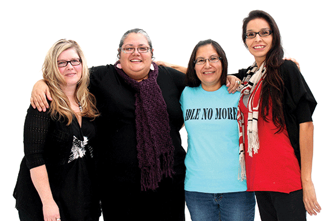
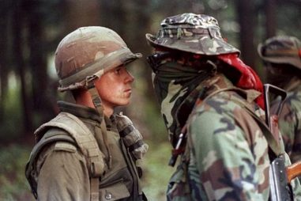

Indigenous Peoples Responses to Imperialism Today
 Recent events in Canada and globally demonstrate that individuals and groups have responded to the issue about taking responsibility. From a global citizen perspective, there are many who believe the responsibility to respond to local or national issues is not just in the hands of local citizens. Many Canadians have rallied with others globally to donate money for cyclone survivors in Myanmar and to politically pressure the Myanmar government to open up its country to international aid. Protesters against the 2008 Beijing Olympics have shown their support alongside Tibetans who have spoken out for Tibet independence.
Recent events in Canada and globally demonstrate that individuals and groups have responded to the issue about taking responsibility. From a global citizen perspective, there are many who believe the responsibility to respond to local or national issues is not just in the hands of local citizens. Many Canadians have rallied with others globally to donate money for cyclone survivors in Myanmar and to politically pressure the Myanmar government to open up its country to international aid. Protesters against the 2008 Beijing Olympics have shown their support alongside Tibetans who have spoken out for Tibet independence.
The legacies and injustices of historical globalization are also issues that Canadians and others feel a responsibility to respond to globally.
In Canada many Aboriginal groups are not satisfied with the contemporary situation that the legacies of historical globalization have created. They have taken action to change the role in which they are dependent on the decisions of Canadian government to correct the social, cultural, economic, and political consequences of historical globalization.
Wet'suwet'en Protests
In February 2020, the Wet'suwet'en pipeline protests made national and international headlines, even through the crisis had been brewing for several years before. The hereditary chiefs and their supporters established a camp to block construction of the Coastal GasLink Pipeline through their traditional territory. The RCMP made some arrests to enforce a court injunction calling for the removal of the blockade. Then protests in solidarity with the Wet'suwet'en hereditary chiefs erupted across the country, including blockades disrupting railway traffic, including through Mohawk land between Toronto and Montreal.
Idle No More
In 2012, feelings of discontentment were growing in Indigenous communities. In particular, the government Bill C-45, which made changes to the Indian Act and the removed several lakes and streams from federal protection created unrest. Many Indigenous people felt that the government was not fulfilling their legal duty to consult them on legislation which affected them, and the removal of protections for many bodies of water made many worried for the safety of their water and their way of life.
In response, four women, Jessica Gordon, Sylvia McAdam, Sheelah McLean, and Nina Wilson began a grassroots protest movement known as Idle No More.

From left to right: Sheelah McLean, Nina Wilson, Sylvia McAdam, Jessica Gordon. Image taken from huffingtonpost.com
The movement focused heavily on the use of social media to organize peaceful protests and flash mobs all throughout Canada. Protests took place everywhere from shopping malls, to parking lots, to government offices, to even New Years' celebrations, all with sometimes as little as a few hours notice! The protests served the purpose of expressing discontentment with the government's policy on Aboriginal peoples, as well as aiming to bring attention to environmental and Indigenous issues.
This video shows a flash mob round dance/protest at Midtown Plaza in Saskatoon, Saskatchewan in 2012.
The movement gained greater media attention when Attawapiskat Chief Teresa Spence staged a hunger strike, drinking only fish broth for several days to pressure the Prime Minister at the time, Stephen Harper, to meet with her on Aboriginal issues. Though not officially an Idle No More action, her actions put the movement in the spotlight and was supported by a number of participants in Idle No More.
The Oka Crisis
Responses to imperialism and globalization have not always been peaceful. The Oka Crisis took place from July to September 1990, and pitted the Kanesatake First Nation against the Canadian government. Many Canadians often view the conflict between the Kanesatake First Nation and local officials and residents of the town of Oka, Québec, as an example of Aboriginal activism. For many outside Oka, the perception was that it was a conflict over land and a proposed golf course. In the perspective of the Kanesatake First Nation, it was more than standing in the way of the development of a golf course. It was a response to past injustices created by imperialism.
The Oka Crisis saw tensions between the Canadian government and First Nations reach a boiling point, with both sides becoming confrontational and even violent.

This image of Ronald "Lasagna" Cross, a mohawk warrior, staring down a Canadian soldier became one of the iconic images of the crisis, as it exemplified the anger and tension that had grown between the Canadian government and First Nations.
See the following video for background on the Oka Crisis.
Discover
CBC Archives has a collection of videos available online. Go to the website and watch Not on our land! (April 1, 1989).
The conflict in Oka did not just erupt suddenly in 1989. Go to the Kanesatake website and gather Kanesatake perspectives in “Our Lands” on the relationship to the land in conflict.
Learning From Past Mistakes
Read through the following links to learn about other legacies of historical globalization that have occurred around the world.
Lesson Summary
The actions of Indigenous peoples around the world demonstrate that efforts within the groups themselves are being taken to respond to the legacies of historical globalization. These responses are diverse and aim to address the lingering impacts of imperialism over Indigenous quality of life, identity, and citizenship.